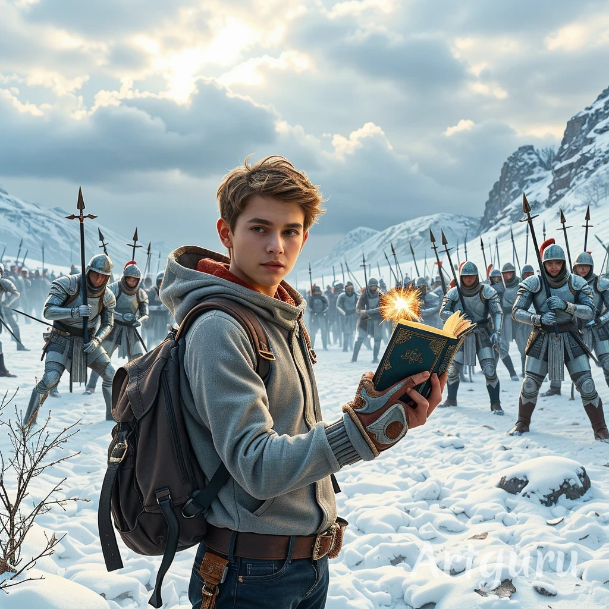

Joven estudiante y la batalla congelada Un cuento de valentía y sabiduría en un reino helado
El cuento narra la historia de un joven estudiante que descubre un antiguo reino congelado en el tiempo, donde una batalla legendaria quedó atrapada en un invierno eterno. Con valentía y sabiduría, el estudiante se adentra en este mundo helado para deshacer el hechizo que mantiene la batalla congelada. A lo largo del camino enfrenta desafíos y enemigos congelados, pero su determinación y conocimiento logran restaurar la paz y el equilibrio, liberando al reino del yugo del invierno infinito.
Instagram GitHub 